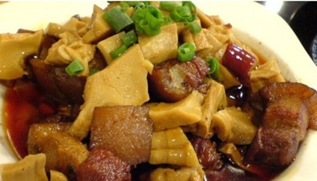

千张包
🔴简介：千张包是浙江省湖州市的一道传统名点，属于浙菜系；该菜品是在清光绪四年（1878）由丁莲芳创制，故名。主要作料为豆制千张，鲜猪肉、开洋、干贝、笋衣、熟芝麻、精盐、味精、黄酒等配制成馅心。
🔴制作：用千张做包皮，裹入馅心，制成三角形包子，与粗绿豆粉丝同煮即成。食时佐以辣油、米醋、白胡椒粉、小葱等调料。特点是，肉嫩不腻，香气四溢，风味独特，营养丰富。
🔴传播：1989年获商业部饮食业优质产品金鼎奖。90年代以来，产品用真空包装，运销国内外，深受欢迎。
🔴简介：千张包是浙江省湖州市的一道传统名点，属于浙菜系；该菜品是在清光绪四年（1878）由丁莲芳创制，故名。主要作料为豆制千张，鲜猪肉、开洋、干贝、笋衣、熟芝麻、精盐、味精、黄酒等配制成馅心。
🔴制作：用千张做包皮，裹入馅心，制成三角形包子，与粗绿豆粉丝同煮即成。食时佐以辣油、米醋、白胡椒粉、小葱等调料。特点是，肉嫩不腻，香气四溢，风味独特，营养丰富。
🔴传播：1989年获商业部饮食业优质产品金鼎奖。90年代以来，产品用真空包装，运销国内外，深受欢迎。
🔴简介：干挑面，顾名思义是一种没有汤的“干”捞面食，仅需少量油汁润滑面条。“挑”则是要将面条不断高高挑拌，让少量的油汁均匀地和在面条上，然后拌之于新鲜猪油，以及店家传统制作的辣佐料、传统大豆酱油和味粉，就烹制出无以言表的香味。
🔴制作：先将水煮开，然后将生面条放入，稍用筷匀拌，合上锅盖，水沸则揭盖，再用筷子稍作匀拌，当面条浮在沸水中，迅将面条用滤水的勺子捞起，尽可能把水滤干，然后放在备好汁料葱花的碗里，汁料当然是用新鲜（辣）猪油或新熬（辣）植物油，放入好的酱油，味精。很多人喜欢在干挑面的上面放上一只新鲜制成的荷包蛋。
🔴历史：干挑面，浙江吴兴地区著名的面食，起源于百年前的浙江长兴，之后流传于湖州地区，湿度适宜的碱面烹煮后被透析出来，拌之于新鲜猪油的动物肉香，以及传统的自制佐料、本地出产的香细葱，传统大豆酱油和味粉，就烹制出无以笔底言传形容的香味，向走进店家的客人直扑而来。湖州干挑面融合苏氏大肉面精髓，在干挑面上加入现炒的浇头，这就是八道拌的起源。
🔴简介（关于冬笋）：冬笋是一种高蛋白、低淀粉食品，对肥胖症、冠心病、高血压、糖尿病和动脉硬化等患者有一定的食疗作用。它所含的多糖物质，还具有一定的抗癌作用。冬笋含有较多草酸钙，患尿道结石、肾炎的人不宜多食。
🔴制作： 1. 冬笋剥去外皮,去掉硬根,切块 2. 五花肉切小块 3. 锅放油,烧热,放少量糖,熬糖色,把肉放里面煸炒 4. 加笋块炖到肉烂,即可出锅
🔴典故：安吉孝丰镇有一款名菜——冬笋炖肉，这道菜还有一个故事。相传，古人孟宗是一个孝子，某日，老母得病，想吃一碗竹笋烧肉。不料，是年冬季特长，大雪封山，竹笋迟迟不肯萌动春芽。老母病卧在床，别无它求，只想吃一筷竹笋烧肉。孟宗无计可施，那天冰冻三尺，漫天飞雪，孟宗脱光了衣服，跪在竹林前，恳求上苍开恩，早点长出竹笋。一时惊动了天地，土地菩萨听闻孟宗孝子之心，甚为感动。次日，只见屋前竹林泥土松动，土层微突，孟宗挖开一看，泥层下面竟然长出黄澄澄的竹笋，一个个肥短可爱。剥开一看，嫩白松脆。孟宗大喜，马上拿回家，煮了一锅“冬笋炖肉”端上。老母吃了之后，胃口大开，连声夸奖味道好。说来也怪，没过几天孟母的病就痊愈了。这就是我国传统“二十四孝”中“孟宗哭竹求笋”的由来，“孝丰”之地名也由此而得。
